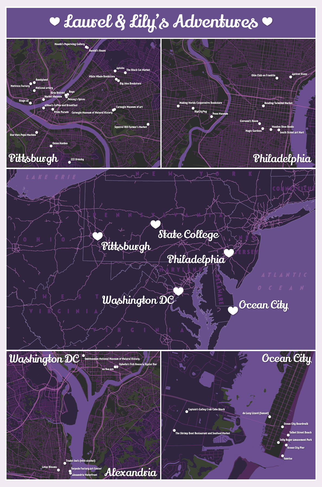

This is a map that I made for my partner, Laurel, for our first anniversary. It is printed at two feet by three feet, and proudly hangs in our living room. The map includes all of the cities that we visited together in our first year of dating, all of which fell within four hours of State College, Pennsylvania, where we live. This made it simple to include a locator map of all of the cities in the middle, with a more detailed map of each city and the places that we visited together in each corner.
The data is from Google Maps. When we visited these cities for the first time together, we always used Google Maps to pin locations that we wanted to go to together. This made it very simple to import the locations we visited into Google MyMaps. Google MyMaps allows for an easy export of point data as a KML file, which can then be opened in QGIS. I made a different QGIS file for each city and imported OpenStreetMap (OSM) data into QGIS (made easy via a plugin). I primarily added in streets and bodies of water to give a basic layout of each place, but I was primarily focused on the locations that we visited together. I quickly exported the files from QGIS into Adobe Illustrator, and did the bulk of the design there.
Laurel’s favorite colors are black and purple, so I used these colors to dominate the map. I added in some pinks and dark greens as accents, and used white for text and other elements that needed to stand out. I also used some “fun” open-source fonts from the Libre Fonts by Womxn, which I do not typically get to use in some of the more serious maps that I make for clients. The map is displayed in our home in a white frame, which is a nice contrast to the dark map and ties in well with the white text and icons.
The design of this map is not incredibly complex, other than the time it took to perfect the colors. However, it is extremely personal, and was a great anniversary gift, especially as a graduate student with a limited budget. Luckily, as a member of the GeoGraphics Lab at Penn State, I have access to a large plotter to print the map. I have recommended to many fellow cartographers in my lab, especially undergraduates, that this is a great way to make a gift for a close friend or family member, and is something that is way more personal and beloved than a store-bought gift.
